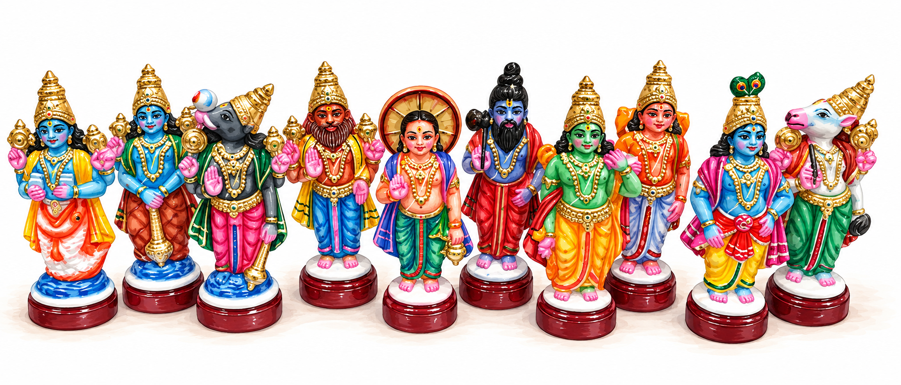

Golu story
Dashavatar
The ten avatars of Vishnu, each appearing when dharma and the balance of the universe are threatened.

Ten avatars, many stories
In Hindu tradition, there are three primary male deities that govern the creation cycle: Brahma, the Creator; Vishnu, the Preserver and Protector; and Shiva, the Destroyer. Vishnu, as the preserver and protector of the universe, appears on Earth at several different points and in several different forms. “Avatar” is a Sanskrit word meaning “form.”
Whenever dharma—righteousness and cosmic order—or the universe is threatened with a potentially premature destruction, Vishnu appears. These ten avatars, known as the Dashavatara, range from a fish and a tortoise to warriors, kings, and a future savior. If some of these stories sound familiar, that is because similar themes appear in mythology and religious traditions around the world.
A closer look at the figures
1. Matsya — The Fish. One day, a tiny fish asked King Manu to protect it from larger fish. Manu obliged, but the fish kept growing until it was too enormous for any pond, river, or ocean. The fish revealed itself as Vishnu and warned Manu that a great flood was coming. Manu built a boat, gathered the seeds of life—a pair of every set of animals and several seeds—and, in some versions, the seven great sages, then tied his vessel to the horn of the enormous fish. Matsya, “fish” in Sanskrit, guided them through the flood, preserving life for a new beginning. The parallels to Noah’s Ark in the Bible are hard to miss, as are those to Utnapishtim’s flood story in Gilgamesh.
2. Kurma — The Tortoise. The devas and asuras were fighting. The gods got annoyed with them and decided to give them a group project, because nothing brings people together like a group project. The project was to churn the Ocean of Milk to obtain amrita, the nectar of immortality. They used Mount Mandara as a churning rod and the great serpent Vasuki as a rope. There was just one problem: the mountain kept sinking into the ocean. Vishnu took the form of an enormous tortoise, Kurma, and supported the mountain on his back while the churning continued. Among the treasures that emerged were the goddess Lakshmi, a deadly poison that Shiva consumed, and eventually the nectar itself. Across cultures, the image of a giant turtle supporting the world appears in several Native American cosmologies, including the Haudenosaunee creation story of Turtle Island. Different stories, but the same rather delightful idea that a turtle is a perfectly reasonable foundation for mountains and even the cosmos.
3. Varaha — The Boar. Once upon a time, the demon Hiranyaksha dragged the Earth into the cosmic ocean, disrupting the balance of the Earth in space. Vishnu appeared as Varaha, an enormous boar, to rescue her. Diving into the depths, Varaha battled Hiranyaksha, defeated him, and lifted the Earth back to her rightful place on his tusks. The broader theme of bringing the Earth up from primordial waters also appears in earth-diver creation myths found across parts of North America and Eurasia, where animals retrieve land from beneath the waters. Varaha’s story adds a battle against evil to the rescue operation.
4. Narasimha — The Man-Lion. The demon king Hiranyakashipu did not want to die. He did penance and got a god to grant him a rather impressive boon. Similar to genies, one cannot simply ask not to die, so he came up with a workaround: he asked that he not be killed by a human or animal, indoors or outdoors, during day or night, on the ground or in the sky, or by any weapon. Convinced he was invincible, he demanded that everyone worship him instead of Vishnu. His own son, Prahlada, refused. When Hiranyakashipu angrily challenged whether Vishnu existed inside a palace pillar, Vishnu burst forth as Narasimha—half-man, half-lion. At twilight, on a threshold, Narasimha placed the king on his lap and killed him with his claws. Every condition of the boon had been respected. Even today, in some households, people will ask you not to dwell or do good things on the porch or threshold of a house. If you are giving something to someone, they will either step outside to meet you or ask you to step inside to hand things to them.
5. Vamana — The Dwarf. King Mahabali was a powerful and generous ruler whose conquests had extended across the worlds, but he had grown too powerful and his conquests were disrupting the natural balance of things. Vishnu appeared before him as Vamana, a small Brahmin boy, and requested a seemingly modest gift: as much land as he could cover in three steps. Mahabali agreed. Vamana then grew into the enormous cosmic form of Trivikrama, covering the Earth in one step and the heavens in another. With nowhere left for the third, Mahabali offered his own head. Vishnu accepted his humility and granted him divine protection.
6. Parashurama — The Warrior with an Axe. Parashurama was born a Brahmin, a priest class that studies the Vedas, but became a formidable warrior, armed with an axe bestowed upon him by Shiva. When the arrogant king Kartavirya Arjuna wronged his family and Parashurama’s father, Jamadagni, was subsequently murdered, Parashurama embarked on a campaign against oppressive Kshatriya rulers, traditionally said to have been repeated twenty-one times. His story raises uncomfortable questions about vengeance, justice, and what happens when those entrusted with power abuse it.
7. Rama — The Exiled Prince. It is very difficult to condense the entire Ramayana into a paragraph. The Ramayana is the second- or third-largest poem in the world and follows the Mahabharata in size. The Ramayana and Mahabharata are the epics of ancient India, filled with romance, action scenes, and politics. The short version is that Rama, prince of Ayodhya, was supposed to become king. Instead, palace politics sent him into fourteen years of exile, accompanied by his wife Sita and brother Lakshmana. During their exile, the king Ravana, a devout man who was also lustful, abducted Sita and took her to Lanka. Rama, aided by Hanuman and an army of vanaras, crossed the sea, defeated Ravana, and rescued her. His eventual return to Ayodhya is celebrated in many traditions during Diwali. Rama’s story forms the heart of the Ramayana, one of India’s great epics, and explores duty, loyalty, kingship, and the sometimes painful consequences of doing what one believes is right. If you have read Homer’s Iliad or Odyssey, the themes of a stolen wife, a monumental war, years of wandering, and a long-awaited homecoming may sound familiar, though the characters’ motivations and moral dilemmas differ considerably.
8. Balarama — The Elder Brother. Balarama is Krishna’s elder brother, known for his extraordinary strength and his characteristic weapon, the plough. Where Krishna is often the clever strategist, Balarama is the more direct, physically powerful counterpart. As children, the brothers faced numerous threats together; later, Balarama became a renowned teacher of mace fighting, training both Bhima and Duryodhana, who would eventually fight on opposing sides of the Mahabharata war. Balarama refused to take sides in that conflict. His association with agriculture, fertility, and the plough also connects him to the importance of cultivating and sustaining the land. Interestingly, some Dashavatara traditions list Buddha instead of Balarama as Vishnu’s ninth avatar.
9. Krishna — The Divine Strategist. Krishna has arguably one of the most eventful childhoods of any divine incarnation. Born under threat from his tyrannical uncle Kamsa, he was secretly raised among cowherds in Vrindavan, where he stole butter, played his flute, was the heartthrob of the area, and defeated demons sent to kill him. As an adult, he became a central figure in the Mahabharata, undertaking much political maneuvering and serving as Arjuna’s charioteer during the great war at Kurukshetra. When Arjuna hesitated to fight his own relatives, Krishna delivered the teachings of the Bhagavad Gita, explaining duty, action, devotion, and the nature of the self. Krishna’s childhood stories are full of mischief and ingenuity, but his role as philosopher and divine guide gives him a much broader significance. He is both the child who steals butter and the teacher who explains the universe. Krishna is well known in the western world through the Hare Krishna movement, which gained popularity in the United States beginning in the 1960s.
10. Kalki — The Avatar Yet to Come. Unlike the other nine, Kalki has not yet appeared. Hindu tradition describes time as moving through great cycles, with our present age, Kali Yuga, characterized by the gradual decline of dharma, truth, and moral order. At the end of this age, Vishnu is prophesied to appear as Kalki, traditionally depicted riding a white horse and wielding a sword, to destroy entrenched evil and usher in a renewed age of righteousness. The story is extremely similar to Christian descriptions of the Second Coming of Jesus, particularly the imagery in the Book of Revelation of a heavenly rider on a white horse who defeats evil and establishes divine justice. Similar expectations of a future restorer appear in Buddhist traditions surrounding Maitreya and in Islamic traditions concerning the Mahdi. Across religions, the idea that the world’s present troubles will eventually give way to a restored moral order seems to have enduring appeal.